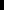

V Generative Recursion
The functions we have developed so far fall into two broad categories. On one hand, we have the category of functions that encapsulate domain knowledge. On the other hand, we have functions that consume structured data. These functions typically decompose their arguments into their immediate structural components and then process those components. If one of the immediate components belongs to the same class of data as the input, the function is recursive. For that reason, we refer to these functions as (structurally) recursive functions. In some cases, however, we also need functions based on a different form of recursion, namely, generative recursion. The study of this form of recursion is as old as mathematics and is often called the study of algorithms.
The inputs of an algorithm represent a problem. Except for rare occasions, the problem is an instance of a large class of problems and the algorithm works for all of these problems. In general, an algorithm partitions a problem into other, smaller problems and solves those. For example, an algorithm for planning a vacation trip requires arrangements for a trip from our home to a nearby airport, a flight to an airport near our vacation spot, and a trip from that airport to our vacation hotel. The entire problem is solved by combining the solutions for these problems.
Designing an algorithm distinguishes two kinds of problems: those that are trivially solvableFor this part of the book, the word “trivial” is a technical term; see Designing Algorithms. and those that are not. If a given problem is trivially solvable, an algorithm produces the matching solution. For example, the problem of getting from our home to a nearby airport might be trivially solvable. We can drive there, take a cab, or ask a friend to drop us off. If not, the algorithm generates a new problem and solves those new problems. A multistage trip is an example of a problem that is non-trivial and can be solved by generating new, smaller problems. In a computational setting one of the smaller problems often belongs to the same class of problems as the original one, and it is for this reason that we call the approach generative recursion.
In this part of the book, we study the design of algorithms, that is,
functions based on generative recursion. From the description of the idea,
we know that this process is much more of an ad hoc activity than the
data-driven design of structurally recursive functions. Indeed, it is
almost better to call it inventing an algorithm than designing
one. Inventing an algorithm requires a new insight—
29 Designing Algorithms
The rest of this chapter is under development. Use HtDP/1e in the meantime.
30 Material for FSMs
shows how to use a finite state machine as a tool for recognizing a specific pattern in strings or in sequences of keystrokes. If you wanted to recognize a different pattern, you would need to modify the program in an appropriate manner.
It should not surprise you that it is possible to create a data representation for FSMs or, equivalently, regular expressions. Once you have this data representation, you can write a program that recognizes any regular-expression pattern in a sequence of keystrokes. As it turns out, BSL+ is not quite powerful enough to implement a true generalization of the world program called for in exercise 100. Instead, the objective of this section is to design accept, a program that checks whether a list of key events is acceptable as specified by a (data representation of an) FSM. To design the full program, you will have to wait until we extend BSL+ to ISL
; A State (in an FSM) is a String.
An FSM itself has three critical attributes as far as we are concerned: its initial state, its possible final states, and transitions between states, which implicitly specifies the finite states of the FSM. A transition also has three attributes: the state in which a KeyEvent is acceptable; the list of KeyEvents that make the machine transition to another state; and the end state of the transition.
(define-struct fsm (initial finals transitions)) (define-struct transition (current keys next))
;; A {FSM} is |
;; racket[(make-fsm tech{State} tech{State*} tech{Transition*})] |
;; A {Transition} is |
;; racket[(make-transition tech{State} tech{KE*} tech{State})] |
;; A {State*} is one of: |
;; -- racket[empty] |
;; -- racket[(cons tech{State} tech{State*})] |
;; A {Transition*} is one of |
;; -- racket[empty] |
;; -- racket[(cons tech{Transition} tech{Transition*})] |
;; A {KE*} is one of |
;; -- racket[empty] |
;; -- racket[(cons tech{KeyEvent} tech{KE*})] |
A machine representation consists of an initial state, a collection of final states, and a list of transitions.
A single transition consists of the current state, plus the list of keys that a user may hit to reach the next state.
In addition to the explicitly specified states of an FSM, we assume that it has one more: (define ER "error"), the error state. Whenever an FSM encounters an erroneous input, it transitions to this special state and stops running.
Exercise 332. Translate the finite state machine from exercise 100 into an element of FSM. Introduce separate definitions:
i0 for the initial state;
f* for the list of final states;
t* for the list of transitions.
Name the machine itself fsm0. 
; tech{KE*} FSM -> Boolean ; is the sequence ke of KeyEvents acceptable to fsm (define (accept ke* fsm) false)
Exercise 333. Formulate functional examples for accept using your solution for exercise 332.
(empty? ke*) means that the sequence of KeyEvents is empty. Since a sequence is considered acceptable if the current state of the program is a final state, the answer is just this test.
(member? crt fnl*) asks whether some state crt is a member of the given list of final states. If so, the program has discovered an acceptable sequence of KeyEvents—
up to this point. Note that if this were a world program, the stop-when clause would cause it to shut down. The third case, (stuck? trns* crt (first ke*)), uses another, yet-to-be-defined auxiliary function, possible?, to determine whether the list of transitions trns* specifies a successor state to crt for the first KeyEvent in the sequence. If not, the machine is considered stuck, meaning the sequence is unacceptable.
Otherwise, we know that (1) the sequence of KeyEvents is not exhausted yet, (2) the current state is not a final state, and (3) trns* contains a transition in from crt to some other state for (first ke*).
; Transition* State KeyEvent -> Boolean (define (stuck? t* crt ke) false) The function ensures that none of the transitions in t* has a current state c with ke a member of its keys.
; Transition* State KeyEvent -> State (define (stuck? t* crt ke) crt) The function retrieves the next state from a (make-transition crt keys next) in t* if ke is a member of keys. If there is no such item in t*, signal the error "can't happen" because we assume that the function is called only when (stuck? t* crt ke) is false.
Exercise 336. Integrate your solutions to the preceding two exercises with the definitions in figure 76 and make sure all functions pass all their tests.
; tech{KE*} FSM -> Boolean ; is the sequence ke of KeyEvents acceptable to fsm (check-expect (accept '("a" "b" "c" "d") fsm0) true) (check-expect (accept '("a" "b" "c" "d" "e") fsm0) true) (check-expect (accept '("a" "b" "left" "d") fsm0) false) (define (accept ke* fsm) (aux ke* (fsm-initial fsm) (fsm-finals fsm) (fsm-transitions fsm))) ; tech{KE*} State tech{State*} Transition* -> Boolean ; is the sequence ke of KeyEvents acceptable to an FSM ; equivalent to (make-fsm crt fnl* trns*) ? (check-expect (aux '("a" "b" "c" "d") i0 f0 t*) true) (check-expect (aux '("a" "b" "c" "d" "e") i0 f0 t*) true) (check-expect (aux '("a" "b" "left" "d") i0 f0 t*) false) (define (aux ke* crt fnl* trns*) (cond [(empty? ke*) (member? crt fnl*)] [(member? crt fnl*) true] [(stuck? trns* crt (first ke*)) false] [else (aux (rest ke*) (next trns* crt (first ke*)) fnl* trns*)]))